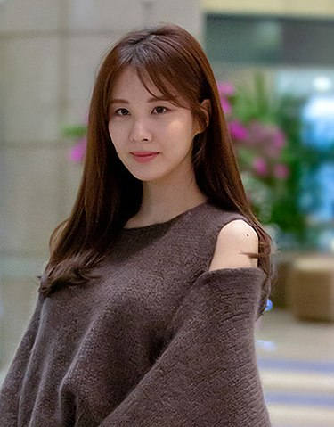

서현(본명: 서주현, 한자: 徐朱玄, 1991년 6월 28일 ~ )은 대한민국의 가수, 배우, 뮤지컬 배우이다.
초등학교 5학년부터 약 5년 간의 연습생 기간 끝에 소녀시대에 합류하며, 2007년 8월 2일 소녀시대의 싱글 〈다시 만난 세계〉를 통해 데뷔하였고, 8월 5일 《SBS 인기가요》에서 데뷔무대를 가졌다. 소녀시대는 〈Kissing You〉〈Baby Baby〉《Gee》《소원을 말해봐》《Oh!》 등으로 활동하며 많은 인기를 얻었다.
2008년 4월 서현은 멤버 제시카, 티파니와 함께 룸메이트의 곡 〈오빠 나빠〉의 객원보컬로도 활동하였으며[9] 2009년 2월에는 주현미와 함께 트로트 프로젝트 싱글 〈짜라자짜〉를 발매해 활동했다.